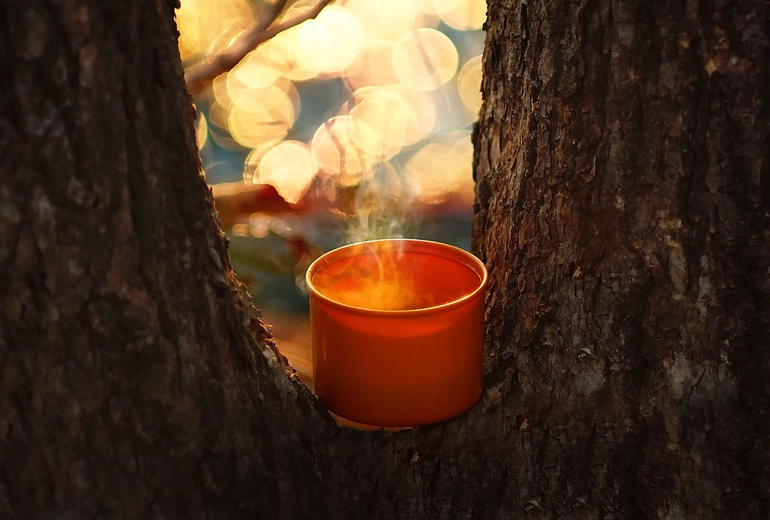
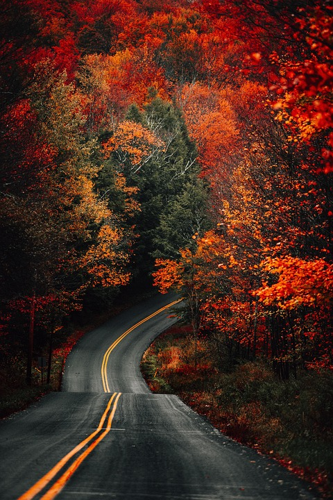

Why I love Fall
The first cool breeze after summer feels like a reset. I finally swap shorts for hoodies my favorite layer, because fall is the sweet spot between “too hot to think” and “too cold to move.” It’s also when streets, parks, and forest preserves shift into a warm palette of burnt orange, amber, and deep maroon. The air smells cleaner, like wood and rain; even busy days slow down a bit. I like to take longer routes when I drive, just to watch the tree lines change color across the horizon and see sunlight flicker through the leaves. Those moments make the ordinary feel cinematic.

Drinks & Comfort
Warm Cocoa or Tea Season
Fall is the official start of Warm Cocoa and Tea season. A mug in hand changes the whole pace of a day—whether it’s a quick break between classes or a late-night study session. Cocoa is my “reward” drink after a long day; black tea is my go-to focus mode. Either way, the warmth matches the season and turns a regular desk into a small, calm corner.
Activities
Golden Horizons
My favorite activity is simple: driving through tree-lined roads or walking in a park with leaves that look like a painting. If there’s time, I’ll park and walk a trail just to hear the crunch of leaves and take a few photos. It’s not about big travel plans; it’s about noticing how familiar places transform for a few weeks and appreciating that window while it lasts. Even a quick loop around the neighborhood feels new when the treetops glow and the sky goes copper at sunset.
